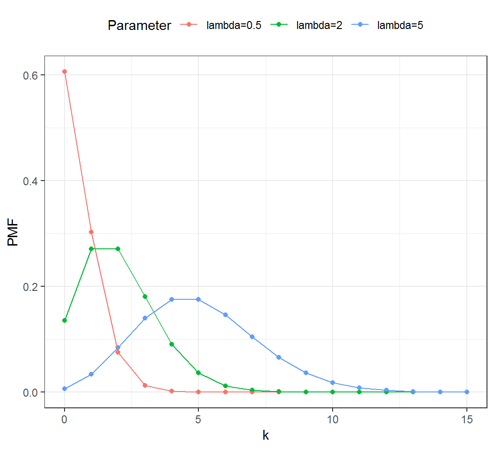

Stat 435 Lecture Notes 1a
Xiongzhi Chen
Washington State University

Review: random variables
Random variables
A random variable describes a data-generating process, and probability gauges how likely an event associated with a random variable can happen.
Examples of random variables:
- Bernoulli and binomial random variable
- Poisson random variable
- Uniform random variable
- Normal (i.e., Gaussian) random variable
- Student t random variable
Bernoulli random variable
A Bernoulli random variable describes a data-generating process that assumes one of two feasible values or cases. For example, it can be used to describe
- Whether a coin lands on
headortailwhen it is flipped once - Whether the return of a stock today is
positiveornegative - Whether it is going to
rainornot rainin 5 hours
Short discussion
Other examples of Bernoulli random variables:
Bernoulli random variable
- Let \(X\) denote if a “fair coin” lands on
tailandfacewith equal probability. Then \(\Pr(X=\text{Tail})=0.5\). - Let \(X\) denote if the return of a stock today is
positiveor ornegative. We may have \(\Pr(X=\text{positive})=0.1\).
Definition:
A Bernoulli random variable \(X\) takes value \(0\) or \(1\) (and is a discrete random variable), such that \[\Pr(X=0)=p \text{ for some } p\in [0,1],\] where \(\Pr\) denotes “probability”. Equivalently, \[\Pr(X=1)= 1 - p.\]
Remarks
Bernoulli random variables
- are possibly the simplest random variables
- can induce binomial random variables under independence
- will be used later in mixture models for classification tasks
Uniform random variable
A uniform random variable describes a data-generating process that assumes each feasible value or setting equally likely. For example, it can be used to describe
- A chosen digit from the 10 digits \(0,\ldots,9\) that are equally likely to be picked
- The number on the up-facing side of a 6-face dice when all faces are equally likely to appear and the dice is rolled
- The landing location of a seed dropped onto a field under ideal conditions
- The position of a point dropped randomly onto the unit interval \([0,1]\)
Uniform random variable
If all digits from \(0,\ldots,9\) are equally likely to be picked and we let \(X\) be the chosen digit in one pick, then \[\Pr(X=i) = 0.1\] for each \(i \in \left\{0,\ldots,9\right\}\).
Let \(X\) be the position of a point dropped randomly onto the unit interval \([0,1]\). Then \[\Pr(x_0 \le X \le x_1) = x_1 - x_0\] for all \(0 \le x_0 \le x_1 \le 1\).
Uniform random variable
Definition:
A discrete uniform random variable that takes one of \(n\) values or settings assumes each value or setting with probability \(1/n\).
A continuous uniform random variable \(X\) has a constant density function \(f(x) \equiv c\) with \(c>0\) such that \[\Pr(x_0 \le X \le x_1) = \int_{x_0}^{x_1} f(x)dx= c (x_1 - x_0)\] for all feasible \(x_0\) and \(x_1\) with \(x_0 \le x_1\).
Normal random variables
A Normal (i.e. Gaussian) random variable can be used to approximately describe
- the heights of men or women
- the length of human pregnancies from conception to birth
- the displacements of particles suspended in a fluid resulting from their collision with the fast-moving molecules in the fluid
Short discussion
Other examples of Normal random variables:
Normal random variables
A Normal random variable \(X\) can take any real value, is a continuous random variable, and has density function \[f(x)=\frac{1}{\sqrt{2 \pi} \sigma} \exp{\left[-\frac{(x-\mu)^2}{2 \sigma^2}\right]},\] where \(\mu\) is the “mean” parameter and \(\sigma\) the “standard deviation” parameter.
- Intuitively speaking, \(\mu\) is the expected location and \(\sigma^2\) the variability of a set of random observations from \(X\).
- When \(\mu=0\) and \(\sigma=1\), \(X\) is called the “standard Normal random variable”.
Normal random variables
Density functions (\(\mu\) for location, \(\sigma\) for scale):
Normal random variables
A Normal random variable \(X\) with density \(f(x)\) takes values in an interval \(I_0=(x_1,x_2)\) that contains a specific value \(x_0\) and has small length \(\delta\) according to the probability rule
\[\Pr(X \in I_0) = \int_{x_1}^{x_2} f(x)dx \approx f(x_0) \times \delta.\] However, the probability that \(X\) takes any specific value is \(0\).
Normal random variables
Probability rule, where \(\mu=0\), \(\sigma=1\), \(x_0 = 0.6\), \(I_0=(0.5,0.7)\) and \(f(x_0) \approx 0.333\):
Normal random variables
If \(X\) is a Normal random variable, then \(aX+b\) is also a Normal random variable for any constants \(a \ne 0\) and \(b\)
If \(X\) is a Normal random vector and \(A\) is a matrix (such that \(Ax\) is defined and not \(0\)), then \(Ax\) is also a Normal random vector
Remarks
The standard Normal random variable arises as the limiting distribution of the sum of a large number of weakly interacting random variables after the sum is suitably standardized. Namely, it approximately describes the probabilistic behavior of these standardized sums when there are many such random variables. This is the essence of the central limit theorem.
However, in reality no data-generating process exactly follows a Normal distribution.
Review: expectation and variance
Expectation and variance
“Expectation” measures the central location or tendency of a random variable, and “variance” measures the variability of a random variable with respect to its expectation.
For many random variables, their expectations are values that these random variables approximately mostly likely assume.
There are random variables whose expectations or variances are infinite, i.e., they do not have finite central locations or finite variability; e.g., the one-sided Cauchy random variable has infinite expectation and infinite variance.
Expectation and variance
Illustration by Normal random variables:
Expectation and variance
For a discrete random variable \(X\) that takes values \(a_1,a_2,\ldots\) with probability mass function \(f\) such that \(f(a_k)=p_k\),
- its expectation \(E(X)\) is defined as \[E(X)= \sum_{i=1}^{\infty} a_i p_i = a_1 p_1 + a_2 p_2 + \ldots\]
- its variance \(Var(X)\) is defined as \[ \begin{aligned} Var(X) &= \sum_{i=1}^{\infty} p_i [a_i - E(X)]^2 \\ & = p_1 [a_1 - E(X)]^2 + p_2 [a_2 - E(X)]^2 + \ldots \end{aligned} \]
Expectation and variance
For continuous random variable \(X\) that takes value in the set \(\mathbb{R}\) of real numbers and has density function \(f\),
- its expectation is defined as \[E(X)= \int_{-\infty}^{\infty}x f(x)dx\]
- its variance is defined as \[Var(X)= \int_{-\infty}^{\infty} [x-E(x)]^2 f(x)dx\]
Standard deviation
The “standard deviation” of a random variable \(X\), denoted often by \(\sigma\) or \(\sigma_{X}\), is defined as \(\sigma = \sqrt{Var(X)}\), where \(Var(X)\) is the variance of \(X\).
Namely, the standard deviation of \(X\) is the square root of the variance of \(X\).
Notes:
- \(\sigma_{X} \ge 0\) for any random variable \(X\).
- These statements are equivalent: \(Var(X)=0\), \(\sigma_{X}=0\), and “\(X\) is a constant with probability \(1\)”.
Expectation and variance
Let \(X\) be a Bernoulli random variable that takes value \(0\) or \(1\), such that \(\Pr(X=0)=p\). Compute its expectation and variance.
Expectation and variance
(Computation continued…)
Expectation and variance
Let \(X\) be a uniform random variable on the closed interval \([0,1]\) that has density \(f(x) \equiv 1\). Compute its expectation and variance.
Expectation and variance
(Computation continued…)
Expectation and variance
For any constants \(a,b\) and \(c\) and two random variables \(X\) and \(Y\), the following are true:
- Linearity of expectation: \[E(aX+bY) = a E(X) + b E(Y)\]
- Quadratic scaling: \(Var(cY) = c^2 Var(Y)\)
Caution: \[Var(X+Y) \ne Var(X) + Var(Y)\] unless \(X\) and \(Y\) are uncorrelated; see definition of “uncorrelated” later on.
Review: covariance, correlation and independence
Covariance and correlation
“covariance” measures how linearly related two random variables are, and its standardized version is “correlation”.
For two random variables \(X\) and \(Y\),
- their covariance \(Cov(X,Y)\) is defined as \[Cov(X,Y) = E([X-E(X)][Y-E(Y)])\]
- their correlation \(Cor(X,Y)\) is defined as \[Cor(X,Y) = \frac{Cov(X,Y)}{\sqrt{Var(X)}\sqrt{Var(Y)}}\]
Note: Correlation is covariance standardized by standard deviations. So, \(Cov(X,Y)=0\) if and only if \(Cor(X,Y)=0\).
Covariance and correlation
For two random variables \(X\) and \(Y\), \(Cor(X,Y)\) is always between \(-1\) and \(1\).
When \(Cor(X,Y)=0\), \(X\) and \(Y\) are called “uncorrelated”. In this case, using a linear function of \(X\) to predict \(Y\) (or vice versa) will not work well.
\(Cor(X,Y)=1\) (or \(-1\)) if and only if with probability \(1\) there are constants \(a>0\) (or \(a<0\)) and \(b\) such that \(Y=aX+b\). This assertion explains partially why covariance and correlation measure linear dependence.
Correlation
Nonzero correlation can suggest a trend:
Independence
The concept of “independence” is fundamental to probabilistic reasoning, statistical learning, and data analytics.
Intuitively speaking, two random variables \(X\) and \(Y\) are independent
- if information on \(X\) does NOT help predict the behavior of \(Y\) and vice versa, or
- whether an event for \(X\) occurs has nothing to do with whether an event for \(Y\) occurs and vice versa
Independence
The following random variables \(X\) and \(Y\) can be regarded as being independent:
- \(X\) as whether a coin flipped by someone lands on tail or face, and \(Y\) the return of Microsoft stock right after the coin lands
- \(X\) as the number of resident orcas in the coast of New Zealand, and \(Y\) that of (human) visits to the Space Needle in Seattle, WA, USA
- \(X\) as the chance of winning a lottery, and \(Y\) the age of a randomly picked buyer of lottery tickets
Independence
The following random variables \(X\) and \(Y\) usually are NOT regarded as being independent:
- \(X\) as the average monthly temperature in a location, and \(Y\) the yield of wheat in that location
- \(X\) as the gender of a randomly picked person, and \(Y\) the preference on a type of activity (e.g., reading)
- \(X\) as the diet of a randomly picked person, and \(Y\) the blood pressure of that person
Independence
Formal definition:
Two random variables \(X\) and \(Y\) are independent if, for any event \(A\) for \(X\) and event \(B\) for \(Y\), \[ \begin{aligned} \Pr(\text{event A for} X \text{ and } \text{event B for } Y \text{ both occur})\\ = \Pr(\text{event A for }X \text{ occurs}) \times \\ \Pr(\text{event B for } Y \text{ occurs}), \end{aligned} \] i.e., \[\Pr(X \in A, Y \in B) = \Pr(X \in A) \times \Pr(Y \in B).\]
If \(X\) and \(Y\) are NOT independent, they are called dependent.
Independence
Consider 2 independent Bernoulli variables \(X, Y \in \{0,1\}\) such that \[\Pr(X=0)=0.5 \text{ and } \Pr(Y=0)=0.6.\] Compute \(\Pr(X=0,Y=0)\).
Independence
Consider 2 independent standard Normal variables \(X\) and \(Y\). Compute \(\Pr( -0.5 \le X \le 0.5, 0 \le Y \le 1)\), given that \(\Pr(-0.5 \le X \le 0.5) = 0.383\) and \(\Pr(0 \le Y \le 1) = 0.341\).
Correlation and independence
The following are true:
If \(X\) and \(Y\) are independent, then they are uncorrelated.
Even if \(X\) and \(Y\) are uncorrelated, they can still be dependent.
For example, let \(X\) be the standard Normal random variable and set \(Y=X^2\). Then \(Cov(X,Y)=0\), i.e., \(X\) and \(Y\) are uncorrelated. But clearly \(X\) and \(Y\) are dependent (why?).
Review: conditional probability
Conditional probability
“Conditional probability” measures how likely an event for a random variable occurs, given that an event for another random variable has (or would have) occurred.
This concept is closely connected to “independence” as we will see later.
Conditional probability
Example 1:
- Pick a number from 10 numbers 1, …, 10, where each number is equally likely to be picked. Given that an even number has been picked, the probability that it is a square number is a conditional probability.
In this example, we can use \(Y\) to denote if a picked number is even or not, and \(X\) if a picked number is square number or not.
Conditional probability
Example 2:
A car factory has 2 product lines, “PL1” and “PL2”, and manufacture materials are equally likely and randomly assigned to a product line to produce a car. Further, each product line has its own probability to produce a defective car. Given that a produced car is defective, the probability that it was produced by product line PL1 is a conditional probability.
In this example, we can use \(X\) to denote the product line that has produced the car, and \(Y\) if a car is defective.
Conditional probability
Let \(X\) and \(Y\) be two random variables, and \(A\) and \(B\) two events for \(X\) and \(Y\) respectively.
If \(\Pr(Y \in B) \ne 0\), then the conditional probability of \(A\) occurs for \(X\) given that \(B\) for \(Y\) has (or would have) occurred,
is often denoted by \(\Pr(A|B)\) when there is no confusion on what the random variable are, or by \(\Pr(X \in A| Y \in B)\) (to explicitly show the random variables, and
is defined as \[ \Pr(X \in A| Y \in B) = \frac{\Pr(X \in A, Y \in B)}{\Pr(Y \in B)}. \]
Conditional probability
When \(\Pr(Y \in B) = 0\), the conditional probability \(\Pr(X \in A| Y \in B)\) is undefined. Namely, it is insensible to talk about if an event for a random variable occurs, given an impossible event for another random variable.
For any events \(A\) and \(B\) for \(X\) and \(Y\) respectively, holds the identity \(\Pr(X \in A, Y \in B) = \Pr(X \in A| Y \in B) \Pr(Y \in B)\).
\(X\) and \(Y\) are independent if and only if, for any events \(A\) and \(B\) for \(X\) and \(Y\) respectively, \(\Pr(X \in A|Y \in B)=\Pr(X \in A)\).
Conditional probability
Example 1: Pick a number from 10 numbers 1, …, 10, where each number is equally likely to be picked. Given that an even number has been picked, what is the probability that it is a square number?
We can use \(Y\) to denote if a picked number is even (“1”) or not (“0”), and \(X\) if a picked number is square number (“1”) or not (“0”).
Since \(4\) is the only even, square number in this setting, we have \[ \Pr(X=1|Y=1)=\frac{\Pr(X=1,Y=1)}{\Pr(Y=1)} = \frac{1/10}{5/10}=\frac{1}{5} \]
Conditional probability
Example 2: A car factory has 2 product lines, “PL1” and “PL2”, and manufacture materials are equally likely and randomly assigned to a product line to produce a car. Further, PL1 has probability \(0.005\) to produce a defective car, and overall defective product rate is \(0.008\). Given that a produced car is defective, what is the probability that the car was produced by PL1?
Let \(X\) denote the product line to which building materials are randomly assigned, and \(Y\) if a car is defective (“1”) or not (“0”).
Conditional probability
Example 2 (continued):
- Firstly, “PL1 has probability \(0.005\) to produce a defective car” is equivalent to \[\Pr(Y=1|X=\text{PL1})=0.005.\]
- Secondly, since \(\Pr(X=\text{PL1})=0.5\), we have \[ \begin{aligned} \Pr(Y=1, X=\text{PL1})&=\Pr(Y=1|X=\text{PL1})\Pr(X=\text{PL1})\\ &=0.005 \times 0.5 = 0.0025 \end{aligned} \]
- So, \[ \begin{aligned} \Pr(X=\text{PL1}|Y=1) &= \frac{\Pr(Y=1, X=\text{PL1})}{\Pr(Y=1)}\\ & = \frac{0.0025}{0.008} = \frac{5}{16} \end{aligned} \]
Bayes rule
Recall from Example 2 the following computation: \[ \begin{aligned} \Pr(X=\text{PL1}|Y=1) &= \frac{\Pr(Y=1, X=\text{PL1})}{\Pr(Y=1)}\\ & = \frac{\Pr(Y=1|X=\text{PL1})\Pr(X=\text{PL1})}{\Pr(Y=1)} \end{aligned} \] where we have used \[\Pr(Y=1, X=\text{PL1}) =\Pr(Y=1|X=\text{PL1}) \Pr(X=\text{PL1}).\]
The above is the Bayes rule, i.e., \[ \Pr(X \in A| Y \in B) = \frac{\Pr(Y \in B|X \in A) \Pr(X \in A)}{\Pr(Y \in B)}. \]
Supplementary
Overview
The rest of the slides contain information that might be helpful to a few students, but they are not required course materials.
Poisson random variable
A Poisson random variable is often used to describe the number of occurrences of an event, and can take as its value each non-negative integer. For example, it can (approximately) describe
- The number of phone calls received by a call center per hour
- The number of decay events per second from a radioactive source
- The number of car accidents at a particular intersection in a day
Poisson random variable
Definition:
A Poisson random variable with rate \(\lambda >0\) has probability mass function (PMF) \(f\) such that \[\Pr(X = k) = f(k) \quad \text{ and } \quad f(k)= \frac{\lambda^k e^{-\lambda}}{k!}\] for \(k=0,1,2,\ldots\)
Poisson random variable
Probability mass function (PMF):

Expectation and variance
Illustration by Poisson random variables:
Expectation and variance
For any constants \(a,b\) and \(c\) and two random variables \(X\) and \(Y\), the following are true:
- Translation invariance: \(Var(Y-a) = Var(Y)\)
- Convexity: \(E(X^2) = Var(X) + [E(X)]^2\)
Covariance and correlation
- \(|Cov(X,Y)| \le \sqrt{Var(X)}\sqrt{Var(Y)}\)
- Translation invariance: for any two constants \(c\) and \(d\), \[Cov(X,Y)=Cov(X+c,Y+d)\] and \[Cor(X,Y)=Cor(X+c,Y+d)\]
Uncorrelated but dependent
Consider a standard Normal random variable \(X\) and set \(Y=X^2\). Then
- \(E(Y)=E(X^2)=Var(X)+[E(X)]^2 = 1\)
- \(Cov(X,Y)=E([X-E(X)][Y-E(Y)])\\=E[X(X^2-1)])=E(X^3)-E(X)=0-0=0\)
Namely, \(X\) and \(Y\) are uncorrelated. But clearly \(X\) and \(Y\) are dependent (why?).
Note: there are many other examples of uncorrelated but dependent \(X\) and \(Y\).
Conditional probability
Example 3:
- A climber randomly chooses one of 3 available but dangerous routes, Route A, Route B and Route C, that all physically lead to his destination, a summit in the Himalayas, and following each route the climber has a specific chance of reaching the summit due to potential snow avalanches. Given that he has reached the summit, the probability that he has chosen Route A is a conditional probability.
In this example, we can use \(X\) to denote the route the climber has chosen, and \(Y\) if he has reached the summit.
License and session Information
> sessionInfo()
R version 3.5.0 (2018-04-23)
Platform: x86_64-w64-mingw32/x64 (64-bit)
Running under: Windows 7 x64 (build 7601) Service Pack 1
Matrix products: default
locale:
[1] LC_COLLATE=English_United States.1252
[2] LC_CTYPE=English_United States.1252
[3] LC_MONETARY=English_United States.1252
[4] LC_NUMERIC=C
[5] LC_TIME=English_United States.1252
attached base packages:
[1] stats graphics grDevices utils datasets methods
[7] base
other attached packages:
[1] knitr_1.21
loaded via a namespace (and not attached):
[1] compiler_3.5.0 magrittr_1.5 tools_3.5.0
[4] htmltools_0.3.6 revealjs_0.9 yaml_2.2.0
[7] Rcpp_1.0.0 stringi_1.2.4 rmarkdown_1.11
[10] stringr_1.3.1 xfun_0.4 digest_0.6.18
[13] evaluate_0.12